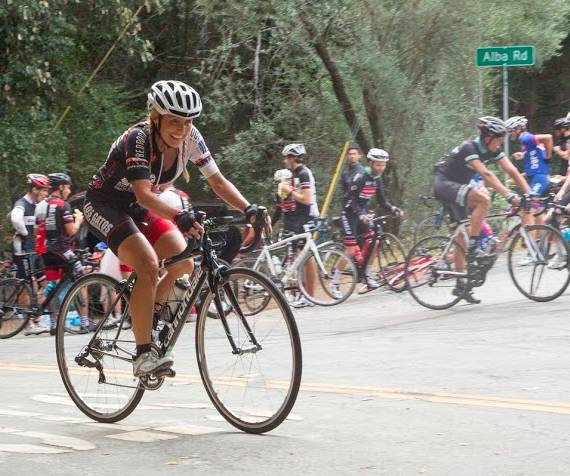

|
 |
 |
|  |
| Jill Stone was part of a very strong LGBRC women's team (Scott Byer) |
Week 3 of the Low-Key Hillclimbs tackled the most infamous climb of the Santa Cruz region, Alba Road. We last visited Alba in 2009 with near-freezing morning temperatures. 2015, however, provided near-perfect climbing weather, with overcast skies but slightly cool air which was perfect for the steep grades uphill and only a bit chilly on the descent.
It was a more cozy group of 72 riders this week, which made for a generally friendly atmosphere as the six starting groups departed in order. Before this, however, Bill Bushnell broke his existing LKHC hybrid-electric course record with a very rapid 17:26. Carol Ordeman, the other hybrid electric rider in attendance, had a somewhat tougher time. Ignoring the advice of her son-in-law David, she tacked the steep slopes of Alba in too big a gear, causing her hyper-charged super-bike to stall. It was a sad, sad sight as Carol was forced to push her bike towards the finish, unable to remount until the grade lessoned soon before the climb's end.
The top contenders for the men's result were all in group 1. Jacob Berkman tried setting an early pace on the steep initial half mile. This proved futile, however, as the group was able to follow. Late in the climb 2014 Low-Key overall men's #2 Stefano Profumo attacked off the front. It looked like he had this one in the bag, although Bill Laddish was able to close the gap and take the win, a very nice result for Bill. In third place was a very strong Carl Nielson, Northern California/Nevada 55+ hill climb champion for 2015.
In group 2, yours truly got an early gap but was caught soon before the finish by a very strong finishing Brian Schuster. Brian showed clearly he had the stuff today to be in group 1 today.
In the women, it came down to a contest between Bonnie Denoyer and Christina Davis in group 4 and the larger group of women in group 5. But it was Christine Davis who came out on top, leading an impressive four riders from LGBRC at the top of the women's standings: Christina, Jill Stone, Lynn Sestak, and Bonnie Denoyer ahead of Team Cycling Panda's Dan Zhang who finished strongly in fifth.
We had two runners today -- John Burton leading the men's division finishing 24 seconds ahead of a very strong looking Lisa Penzel, who won the women's.
In the team standings it was LGBRC who solidified their position in the team overall ranking (in addition to their overwhelming lead in the Megateam ranking) with a very strong showing here, a climb which is relatively close to home for the Los Gatos club. Sisters and Misters were second, with San Jose Bike Club third. Low-Key made a strong showing for fourth, just ahead of Google.
One difference this year from 2009 was the relative lack of Santa Cruz riders this time. Hopefully we can get more of our Santa Cruz friends to come out for Mountain Charlie on week 8.
KOM special mention qualifiers indicated with orange background.
| pl | # | name | team | cat | time | mph | fph | score |
|---|---|---|---|---|---|---|---|---|
| 1 | 49 | Christina Davis | LGBRC | 4 | 33:12 | 6.78 | 3732 | 115.41 |
| 2 | 270 | Jill Stone | LGBRC | 4 | 34:02 | 6.61 | 3641 | 112.71 |
| 3 | 17 | Lynn Sestak | LGBRC | 55+ | 34:24 | 6.54 | 3602 | 111.56 |
| 4 | 51 | Bonnie Denoyer | LGBRC | 45+ | 35:31 | 6.34 | 3489 | 108.21 |
| 5 | 249 | Dan Zhang | Team Cycling Panda | 35+ | 47:17 | 4.76 | 2620 | 82.35 |
100 point reference time for division Women = 38:34
| pl | # | name | team | cat | time | mph | fph | score |
|---|---|---|---|---|---|---|---|---|
| 1 | 90 | Bill Laddish | Team CVC | 45's | 24:49 | 9.07 | 4993 | 127.39 |
| 2 | 126 | Stefano Profumo | Squadra SF | 35+ | 24:54 | 9.04 | 4976 | 126.98 |
| 3 | 228 | Carl Nielson | Sr's & Mr's of No Mercy | 55+ | 25:13 | 8.92 | 4913 | 125.46 |
| 4 | 30 | Jacob Berkman | ThirstyBear p/b Akamai | 35+ | 25:19 | 8.89 | 4894 | 124.99 |
| 5 | 149 | Joseph Sullivan | San Jose Bike Club | 35+ | 25:22 | 8.87 | 4884 | 124.75 |
| 6 | 62 | Chris Evans | Stanford & Sons | 35+ | 25:33 | 8.81 | 4849 | 123.90 |
| 7 | 46 | David Collet | Stanford & Sons | 45+ | 25:55 | 8.68 | 4781 | 122.23 |
| 8 | 138 | Kirk Scheibelhut | Sparklemotion | Runner With A Bike | 26:00 | 8.65 | 4765 | 121.85 |
| 9 | 142 | Brian Schuster | Squadra SF | 2 | 26:43 | 8.42 | 4638 | 118.73 |
| 10 | 1 | Daniel Connelly | Low-Key | 3 | 26:59 | 8.34 | 4592 | 117.61 |
| 11 | 212 | Robert Easley | Sr's & Mr's of No Mercy | 45+ | 27:08 | 8.29 | 4566 | 116.99 |
| 12 | 108 | Shahram Moatazedi | LGBRC | 40+ | 27:13 | 8.27 | 4552 | 116.65 |
| 13 | 311 | Morgan Raines | Bike Trip | 40+ | 27:23 | 8.22 | 4525 | 115.97 |
| 14 | 91 | Stephen Lamm | 40+ | 27:54 | 8.06 | 4441 | 113.92 | |
| 15 | 47 | Andy Crews | Diablo | 45+ | 27:55 | 8.06 | 4438 | 113.85 |
| 16 | 16 | Joe Fant | LGBRC | 55+ | 28:06 | 8.01 | 4409 | 113.15 |
| 17 | 305 | Menko Johnson | Pen Velo/Pomodoro | 35+ | 28:45 | 7.83 | 4310 | 110.70 |
| 18 | 115 | Evan Paull | loves pancakes | 30+ | 28:50 | 7.80 | 4297 | 110.40 |
| 19 | 39 | Paul Castonguay | Low-Key | 45+ | 28:55 | 7.78 | 4285 | 110.09 |
| 20 | 78 | Rich Hill | LGBRC | 50+ | 28:59 | 7.76 | 4275 | 109.85 |
| 21 | 148 | Todd Studenicka | San Jose Bike Club | 45+ | 29:18 | 7.68 | 4229 | 108.72 |
| 22 | 153 | Nils Tikkanen | Thankful | 29:20 | 7.67 | 4224 | 108.60 | |
| 23 | 301 | Goeric Daeninck | Paradise Garage | 35+ | 29:21 | 7.67 | 4221 | 108.54 |
| 24 | 141 | Martin Schubert | 30+ | 29:23 | 7.66 | 4217 | 108.42 | |
| 25 | 86 | Joe Karbowski | Team Joe Karbowski | 35+ | 29:49 | 7.55 | 4155 | 106.92 |
| 26 | 211 | Tom Dillon | Pen Velo/Pomodoro | 45+ | 29:53 | 7.53 | 4146 | 106.69 |
| 27 | 152 | Stuart Taylor | Tandem Team Taylor | 40+ | 30:06 | 7.48 | 4116 | 105.96 |
| 28 | 147 | Daryl Spano | San Jose Bike Club | 45+ | 30:17 | 7.43 | 4091 | 105.35 |
| 29 | 306 | Joseph Junio | SOLO | Havefun | 30:44 | 7.32 | 4031 | 103.87 |
| 30 | 235 | Michael Reynolds | LGBRC | Hopefully Fast | 30:49 | 7.30 | 4021 | 103.61 |
| 31 | 107 | Chris Mickelsen | Pen Velo/Pomodoro | 55+ | 31:05 | 7.24 | 3986 | 102.76 |
| 32 | 226 | Val Minaev | LGBRC | 35+ | 31:40 | 7.11 | 3913 | 100.95 |
| 33 | 303 | Zachary Hilton | Sr's & Mr's of No Mercy | 35+ Cat 4 | 31:44 | 7.09 | 3904 | 100.75 |
| 34 | 308 | Phil Lovaglio | San Jose Bike Club | 55+ | 31:52 | 7.06 | 3888 | 100.34 |
| 35 | 95 | Robert Lojek | 5-Ish | 31:53 | 7.06 | 3886 | 100.29 | |
| 36 | 83 | Steve Johnson | LGBRC | 50+ | 32:02 | 7.02 | 3868 | 99.85 |
| 37 | 12 | Will Von Kaenel | LGBRC | 55+ | 32:10 | 6.99 | 3852 | 99.45 |
| 38 | 32 | Geoffrey Bower | Dash | 30+ | 32:17 | 6.97 | 3838 | 99.11 |
| 39 | 131 | Doug Reynolds | NightRiders | 60+ | 32:34 | 6.91 | 3805 | 98.29 |
| 40 | 143 | Jeremy Scott | LGBRC | 45+ | 32:35 | 6.91 | 3803 | 98.24 |
| 41 | 309 | Scott Martin | Team Spokesman | 55+ | 32:43 | 6.88 | 3787 | 97.85 |
| 42 | 124 | Ryan Powell | Team Joe Karbowski | 35+ | 32:58 | 6.83 | 3758 | 97.15 |
| 43 | 304 | George Janour | Spokesmen Santa Cruz | 45+ | 32:59 | 6.82 | 3756 | 97.10 |
| 44 | 271 | Robert Doudell | LGBRC | 45+ | 33:28 | 6.72 | 3702 | 95.76 |
| 45 | 116 | Frank Paysen | Chain Reaction | 55+ | 33:37 | 6.69 | 3686 | 95.35 |
| 46 | 244 | Bernardo Tapia | Stanford Cycling | 40+ | 33:56 | 6.63 | 3651 | 94.50 |
| 47 | 160 | Jim Williams | San Jose Bike Club | 65+ | 34:18 | 6.56 | 3612 | 93.54 |
| 48 | 65 | Andrew Fitzhugh | Stanford Cycling | 50+ | 34:25 | 6.54 | 3600 | 93.24 |
| 49 | 125 | Thomas Preisler | LGBRC | 60+ | 35:09 | 6.40 | 3525 | 91.38 |
| 50 | 40 | Hui Chen | Team Cycling Panda | 45+ | 35:23 | 6.36 | 3502 | 90.80 |
| 51 | 170 | Christoph Erben | LGBRC | 45+ | 35:24 | 6.36 | 3500 | 90.76 |
| 52 | 312 | Scott Violet | 40+ | 35:56 | 6.26 | 3448 | 89.48 | |
| 53 | 158 | Han Wen | Grumpy Old Men (GOM) | 45+ | 36:00 | 6.25 | 3442 | 89.32 |
| 54 | 300 | Tony Amadio | Clagnuts | 30+ | 36:03 | 6.24 | 3437 | 89.20 |
| 55 | 302 | Fred Egley | Clagnuts | 50+ | 36:18 | 6.20 | 3413 | 88.61 |
| 56 | 201 | Nigel Allen | Oso | 40+ | 36:33 | 6.16 | 3390 | 88.04 |
| 57 | 87 | Larry Klein | Grumpy Old Men (GOM) | 55+ | 36:54 | 6.10 | 3358 | 87.24 |
| 58 | 85 | Rupesh Kapoor | Slightly Old | 37:08 | 6.06 | 3337 | 86.71 | |
| 59 | 136 | Shane Ruggieri | LGBRC | 45+ | 37:12 | 6.05 | 3331 | 86.57 |
| 60 | 247 | Brian Ward | Zombie Raccoon | 40+ | 38:04 | 5.91 | 3255 | 84.68 |
| 61 | 159 | Carl Werner | LGBRC | 50+ | 38:17 | 5.88 | 3236 | 84.23 |
| 62 | 310 | Eric Nehrlich | Slow-Poke | 40:36 | 5.54 | 3052 | 79.63 | |
| 63 | 989 | John Bleau | LGBRC | 45+ | 42:48 | 5.26 | 2895 | 75.72 |
| 64 | 242 | Gregory P. Smith | Low-Key | Finisher | 42:59 | 5.23 | 2883 | 75.41 |
| 65 | 137 | David Salazar | Stanford Cycling | 25+ | 44:26 | 5.06 | 2788 | 73.06 |
100 point reference time for division Men = 31:58
| pl | # | name | team | cat | time | mph | fph | score |
|---|---|---|---|---|---|---|---|---|
| 1 | 6 | Bill Bushnell | Low-Key | Recumbent | 17:26 | 12.91 | 7107 | 106.29 |
| 2 | 112 | Carol Ordemann | Stanford & Sons | Hybrid-Electric | 33:48 | 6.66 | 3666 | 56.50 |
100 point reference time for division Hybrid Electric = 18:34
| pl | # | name | team | cat | time | mph | fph | score |
|---|---|---|---|---|---|---|---|---|
| 1 | 34 | John Burton | Quicksilver Running Club | 40+ | 40:53 | 5.50 | 3031 | 84.94 |
100 point reference time for division Male Runner = 34:27
| pl | # | name | team | cat | time | mph | fph | score |
|---|---|---|---|---|---|---|---|---|
| 1 | 117 | Lisa Penzel | Low-Key | 50+ | 41:17 | 5.45 | 3001 | 100.65 |
100 point reference time for division Female Runner = 41:33
| pl | team | score | riders |
|---|---|---|---|
| 1 | LGBRC | 345.20 | Shahram Moatazedi, Joe Fant, Rich Hill, Michael Reynolds, Val Minaev, Steve Johnson, Will Von Kaenel, Jeremy Scott, Christina Davis, Robert Doudell, Jill Stone, Lynn Sestak, Thomas Preisler, Christoph Erben, Bonnie Denoyer, Shane Ruggieri, Carl Werner, John Bleau |
| 2 | Sr's & Mr's of No Mercy | 343.20 | Carl Nielson, Robert Easley, Zachary Hilton |
| 3 | San Jose Bike Club | 338.82 | Joseph Sullivan, Todd Studenicka, Daryl Spano, Phil Lovaglio, Jim Williams |
| 4 | Low-Key | 333.99 | Bill Bushnell, Daniel Connelly, Paul Castonguay, Lisa Penzel, Gregory P. Smith |
| 5 | 330.94 | Stephen Lamm, Nils Tikkanen, Martin Schubert, Robert Lojek, Scott Violet, Rupesh Kapoor, Eric Nehrlich | |
| 6 | Pen Velo/Pomodoro | 320.15 | Menko Johnson, Tom Dillon, Chris Mickelsen |
| 7 | Stanford & Sons | 302.62 | Chris Evans, David Collet, Carol Ordemann |
| 8 | Stanford Cycling | 260.80 | Bernardo Tapia, Andrew Fitzhugh, David Salazar |
| 9 | Squadra SF | 245.72 | Stefano Profumo, Brian Schuster |
| 10 | Team Joe Karbowski | 204.07 | Joe Karbowski, Ryan Powell |
| 11 | Clagnuts | 177.81 | Tony Amadio, Fred Egley |
| 12 | Grumpy Old Men (GOM) | 176.56 | Han Wen, Larry Klein |
| 13 | Team Cycling Panda | 173.15 | Hui Chen, Dan Zhang |
| 14 | Team CVC | 127.39 | Bill Laddish |
| 15 | ThirstyBear p/b Akamai | 124.99 | Jacob Berkman |
| 16 | Sparklemotion | 121.85 | Kirk Scheibelhut |
| 17 | Bike Trip | 115.97 | Morgan Raines |
| 18 | Diablo | 113.85 | Andy Crews |
| 19 | loves pancakes | 110.40 | Evan Paull |
| 20 | Paradise Garage | 108.54 | Goeric Daeninck |
| 21 | Tandem Team Taylor | 105.96 | Stuart Taylor |
| 22 | SOLO | 103.87 | Joseph Junio |
| 23 | Dash | 99.11 | Geoffrey Bower |
| 24 | NightRiders | 98.29 | Doug Reynolds |
| 25 | Team Spokesman | 97.85 | Scott Martin |
| 26 | Spokesmen Santa Cruz | 97.10 | George Janour |
| 27 | Chain Reaction | 95.35 | Frank Paysen |
| 28 | Oso | 88.04 | Nigel Allen |
| 29 | Quicksilver Running Club | 84.94 | John Burton |
| 30 | Zombie Raccoon | 84.68 | Brian Ward |